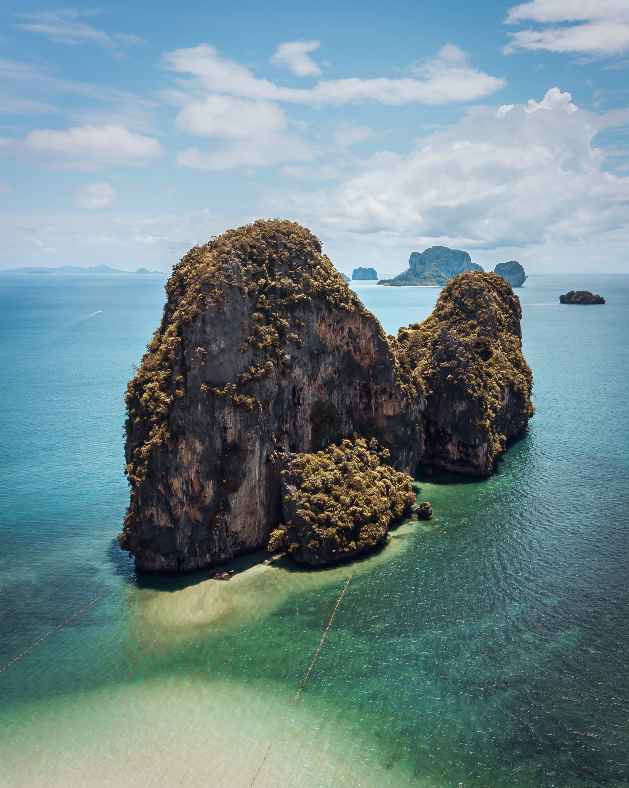
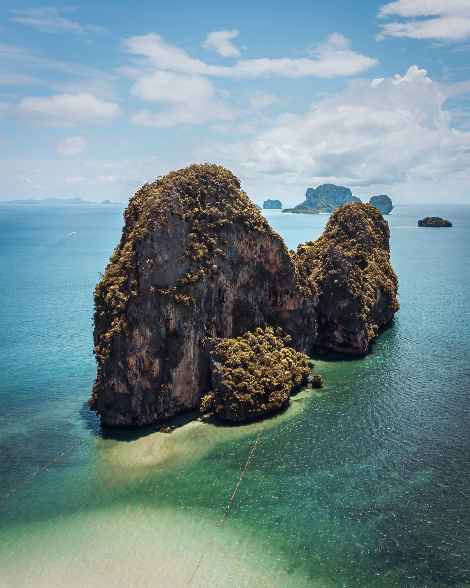

Phuket: The paradise island
Phuket the one of most famous cities in Thailand. You can enjoy many beautiful islands such as Phi Phi islands, Similan islands, Racha islands, Koh Khai islands, etc.
Phi Phi islands is one of the most must visit. You can go there by local wooden boat or yacht depending on yours budget. When you there, you will find a nice white endless beach. You can enjoy all day on the Phi Phi islands. There are many things to do or you can chill on the beach, buy some coconut water, have some ice cream to eat, etc. After that go back to main island and go to Cape Phrom Thep in the evening to see the most beautiful place to see sunset in Thailand.
Also, at night if you want to enjoy nightlife, you can go to Pa Tong. You will see some fantasy things to do, and you will never find this in others countries in this world. The main city also is the one must visit place. The old style building is fantastic and amazing. Many tourists would like to come here for walking around, see some old style. Moreover, there are a lot of café there, you should try some.